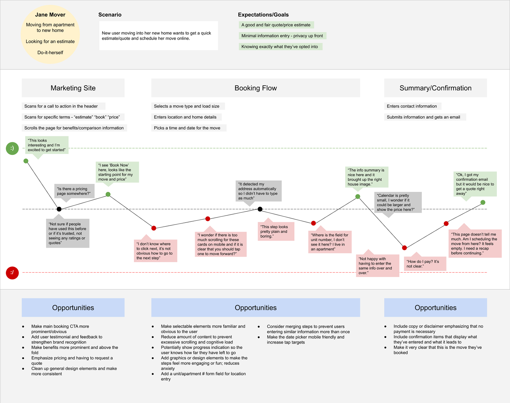
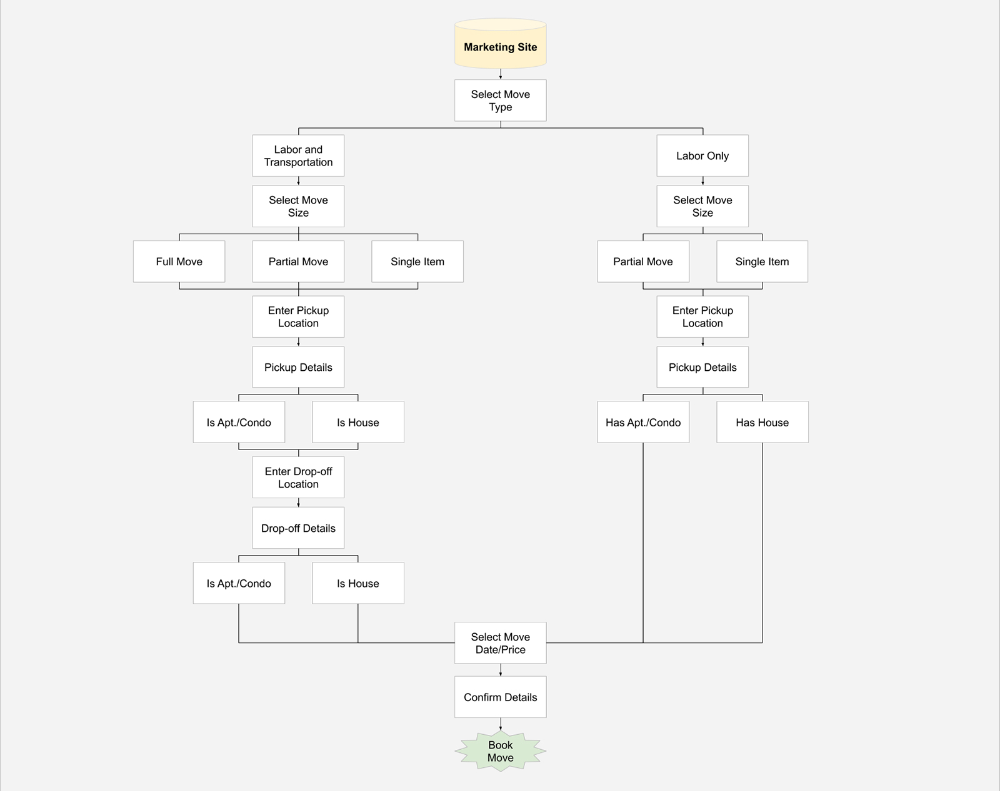
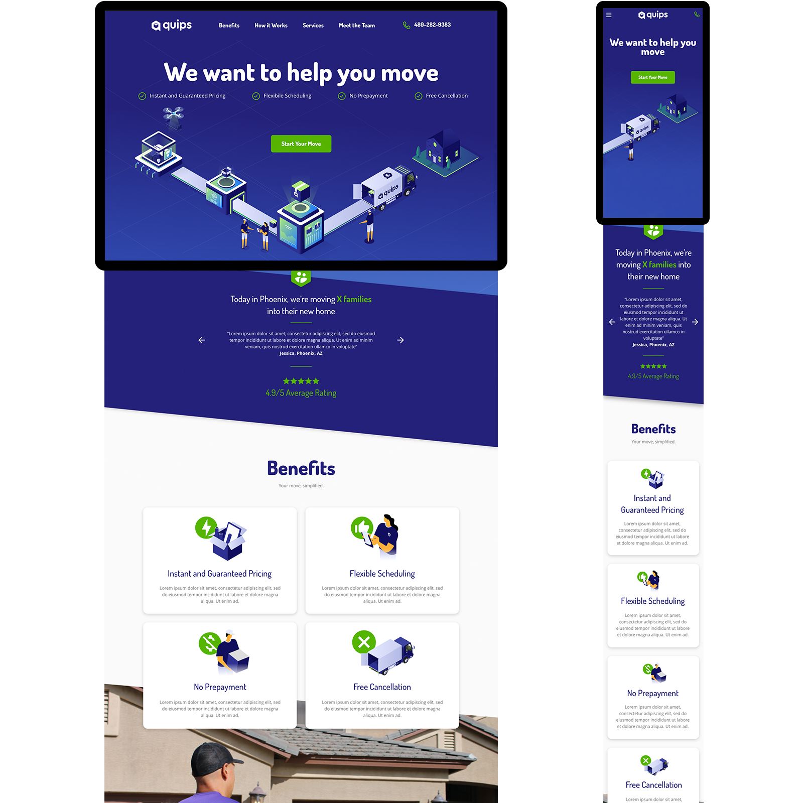
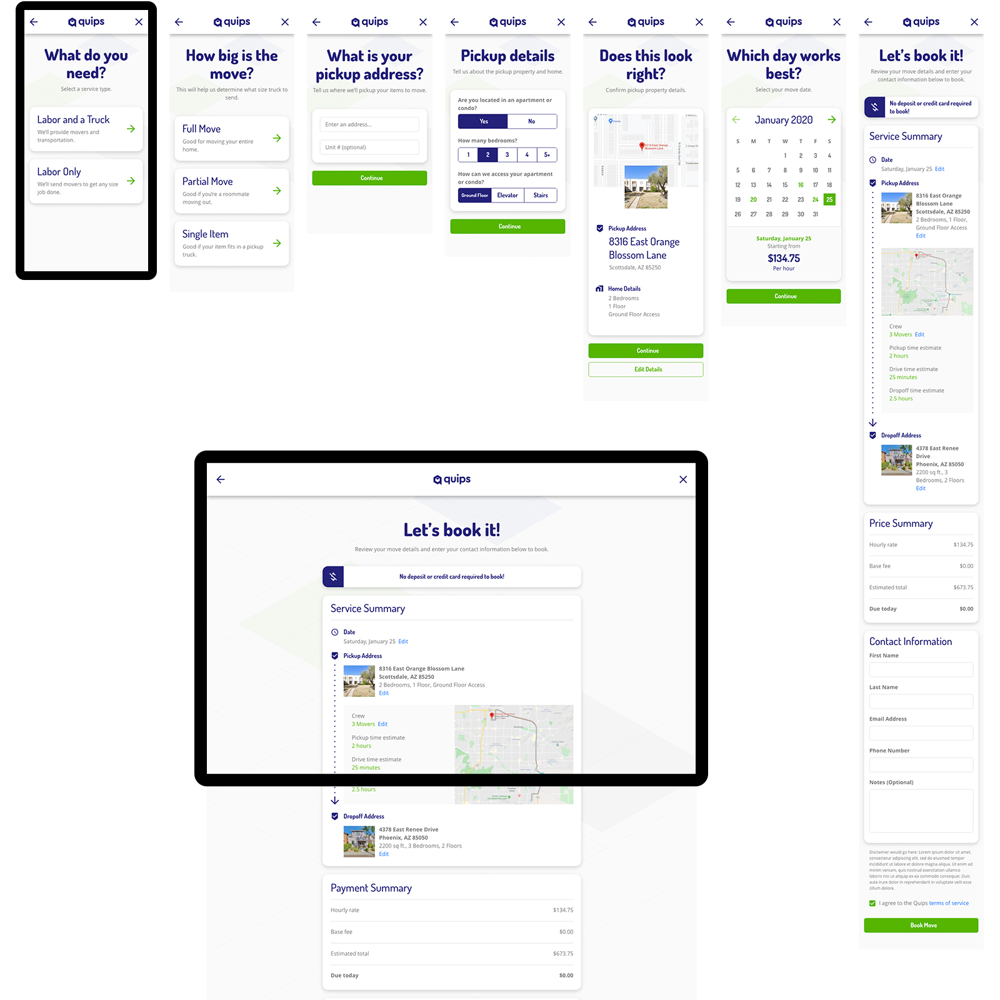

Background
I was hired by smart moving startup Quips to help redesign their front-facing marketing site and booking flow. The user and business goals were to immediately capture user's attention with informative, engaging visuals and ease them through a step-by-step booking flow for conversion.
Problem
The original marketing page was quickly put up during Quips' intitial launch. It saw engagement but once users tried to book a move, it lead to confusion and drop-off due to unclear, inconsistent, and missing elements throughout the flow.
Hypothesis
1.) I believe higher user engagement be achieved by drawing movers into a booking flow with simple, descriptive visuals and content.
2.) I believe booking conversion rates will be improved by providing clearer, intuitive steps and progress indication throughout, while minimizing steps as much as possible.
Timeline
4 Months, November 2019 – February 2020
{kind=link}
Kick-Off
Conversations and Questions
I wanted to get to the bottom of the user and business problems by asking questions: Where did the need for this came from? Who are your competitors? What metrics were gathered? What are the user and business outcomes expected? By getting as much detail about the project up front, I was able to get a well-rounded impression that led to a clear path for the process.
Compile and Strategize
After much discussion and drawing patterns, I broke the project up into two phases:
Phase 1
- Use design thinking to identify, note, and solve for existing user problems
- Compose empathy maps, user journeys, and wireframes to visualize solutions
Phase 2
- Audit the current marketing page and booking flow, note each design element, and compose a new design system and component library
- Apply new components and styles across the site and iterate
Form Hypothesis
With all of this boiled down, I put together clear hypothesis statements:
1.) I believe higher user engagement be achieved by drawing movers into a booking flow with simple, descriptive visuals and content.
2.) I believe booking conversion rates will be improved by providing clearer, intuitive steps and progress indication throughout, while minimizing steps as much as possible.
Phase 1
Empathize and Define
Understand the User
From stakeholder feedback and empathy mapping, I started to list out aspects of the user persona we were working with:
Demographic
- People moving into small/mid-size apartments and homes
- Do-it-yourself mindset
Needs
- A free moving quote and price calculation
- Moving time estimate
- All-in-one booking solution
Behaviors
- Use multiple online quote calculators
- Abandon booking flows early if asked for too much info up front
- Search and call conventional moving companies for support
Problems
I gathered feedback and put together a user journey map emphasizing these core problems:
- Initial marketing page is static and uninviting
- Primary "Book Now" call-to-action is not emphasized enough
- Most active design elements and links don't look selectable
- Not enough description or value proposition to tell what this is
{kind=link}

User journey maps are great for compiling feedback to identify and visualize problems within a design or flow.
{kind=link}
Ideate Solutions
Key Aspects
With user needs and problems in mind, I drew key aspects that also align with the business goal of gaining more conversions:
- Engaging: Emphasize primary call-to-actions
- Direct: Keep each step in the booking flow to-the-point and in view
- Clear: Design elements should appear selectable and familiar
Ideas
- Keep the "Book Now" call-to-action and value proposition highest in the fold
- Make elements look selectable and in view
- Keep each step as short and concise as possible
- Display progress indication
Design Goals
I started visualizing and noting design-level goals. This helped me to create a site map:
- Strive for familiar visual hierarchy
- Place design elements logically and consistently to avoid cognitive dissonance and excess scanning
- Expose small snippets of information to describe each step

Site maps for plotting new navigation and views.
Sketch, Wireframe, Iterate
Hand Sketches
After circling back with the Quips team with a proposed flow and discussing it further, I broke out my notepad, grabbed a pen, and started sketching views.
Refine Into Wireframes
Using prototyping tools Whimsical and Adobe XD, I refined some of the stronger sketches into wireframes. This type of design is easy to edit and helps stakeholders and users visualize the product before applying design language, brand, content, and imagery.
Incorporate Feedback and Iterate
After a few rounds of feedback and iteration, we landed on good desktop and mobile wireframes to move forward with with the new design system, branding and components.
{kind=link}
Phase 2

Compose Design System
Audit Existing Design
Using the solutions and materials uncovered in Phase 1, I did a complete visual audit of the legacy marketing page and booking flow, noting every element and style. This helped me merge any redundant design components and remove inconsistencies throughout the site.
Craft Design Language
I forked off some of the existing brand elements and put together the building blocks of the new design:
- Typography
- Iconography
- Colors and theme
- Imagery and graphic standards
- Spacing
Design New Components
Using the defined language, I applied it to new components for a clean, consistent look:
- Buttons
- Form fields
- Sections and cards
- Navigation and footer bars
Apply and Document
Atomic Methodology
I applied new design components to the approved wireframes and redesigned each view using Brad Frost's Atomic Methodology:
- Atoms: Buttons, form fields, form labels, dropdowns, text and image blocks
- Molecules: Form and button groups and hero banners
- Organisms: Cards, navigation and footer bars, and content sections
- Templates: Detail entry step, location entry step, and summary view step
Document and Compile Guide
A design system is more than just a library of components: it's a process of designing, developing, and deploying new UI. After redesigning and iterating on views, I documented the following for every component into a design guide:
- High level summary
- Technical specs
- When to use and why (important!)
{kind=link}
The Outcome
After identifying user problems and solving for them using design thinking and bringing it to life with a design system, the designs were launched. When I revisited the product, conversion rates increased, abandon rates decreased, and overall customer satisfaction and understanding improved greatly.
View Site
View Mobile Prototype
View Desktop Prototype

